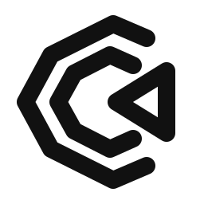
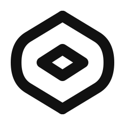

Original monochrome explorations. Compare light, dark, 32 px and 16 px before selecting a direction.
Two opposing paths leave a deliberate passage through the center.
Two sides and two crossings express human and agent collaboration.
Parallel flows suggest a continuous task moving across surfaces.
Four open corners frame a forward path and a central prompt.

Angular nested paths turn toward a shared destination.

Two separate arcs guide work around a precise central focus.